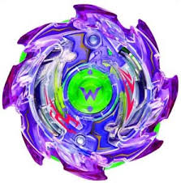

Here are the top 5 beyblade burst beys from Hasbro that you NEED. It is listed as best to worst. All beys are from evolution.
beyblade.hasbro.com
Spryzen Requiem 0 Zeta. This beyblade not only can change spin direction, but can also steal spin from any bey. The disk, 0, is one of the heaviest in the game and works well with defense type beys. Zeta also plays an important part to make this beyblade be ultra strong. It can change to three different modes. Stamina, defense, and attack. Although the stamina mode isn't very good...
Ark Balkesh 2Bump Atomic. A very cool gimmic, however not sure if it has any affection in the battle, is that it has hidden blades that is revealed during battle. It is left spinning, just like most beys in this list. Being defense type, it is very heavy and not likely for it to loose by a ring-out finish. The driver, Atomic, is a free-spinning rotating ball to reduce friction.
amazon.com
Drain Fafnir 8 Nothing.What is cooler than watching a beyblade steal-spinning?! With rubber on it, and the fact that it's left spin, it can steal-spin from any right spinning beyblde! The 'performance tip', as Hasbro calls it, has a spring at the end, allowing it to have a few cool jumps, and an epic special move appearance in the anime.

beyblade.hasbro.com
Tempest Wyvron 4Glave Atomic.Wyvron has a free spinning blade, allowing it to deflect most attacks. And by most, I mean literaly all except lower and upper attacks. It's frame, Glave, is very round, making it very defendable and unstoppable. The driver, Atomic, (Above in Ark Balkesh) has a cool appearance in the anime series as 'hyper shield crash'.
beyblade.hasbro.com
Nightmare Luinor Destroy.What's unique about this bey is that it's disk is forged into the layer, allowing it to have amazingly hard attacks. The layer itself is super heavy, being a component to the hard attakcs. The driver, Destroy, has a star-shaped tip that is free spinning, letting the bey be out of control. It is made of rubber, to add friction to the stadium. The bey as a whole is one of my personal favorites.
In conclusion, the most powerful beyblades in the evolution series are Spryzen Reqiem, Ark Balkesh, Drain Fafnir, Tempest Wyvron, and Nightmare Luinor. Please note this is based mostly on stats and average opinions, and the welfare of tournaments. All beyblades are tested using HASBRO beyblades. Of course, there is no such thing as the 'best' beyblades, but based on stats, anime, and opinions here they are.